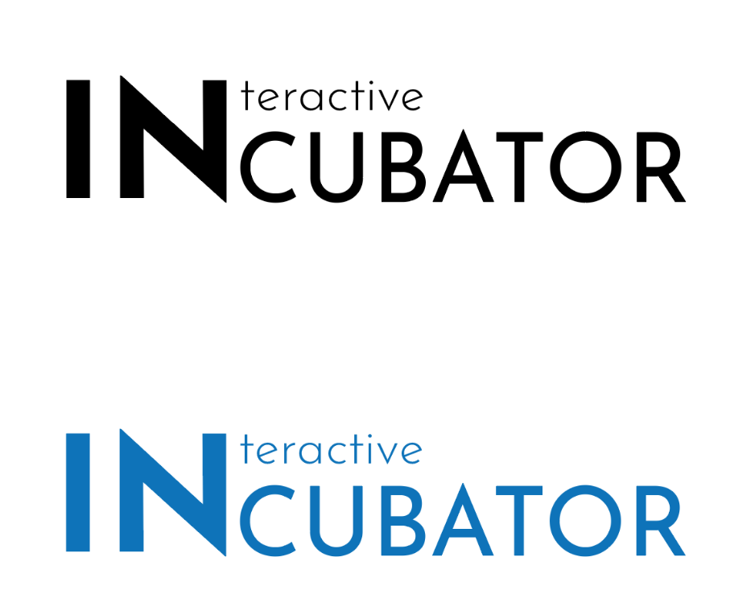

Naming
The name that I have chosen for IDM area is “Interactive incubator”.
“Incubator” is a versatile word, used in biology (a device for maintaining animal eggs or human babies), culture and art (the process of thinking and creativity), and business (an organisation helping new business develop). One central idea is that incubator allows the involved parties to grow and flourish. This echoes with the idea that IDM tries to convey— students coming from different backgrounds work and learn in an environment conducive to growth so that they can advance and progress in different ways.
Interactivity is also one essential feature of the course. The primary subject of study is interactive media. In addition, interactivity also refers to how students and professors interact with each other, evoking an image of people working together and enjoy one another’s company.
Logotype Rationale
The IN combines the two word vertically, so it is the largest and the most noticeable in the logo. The font is very assertive. IN resembles the pillars that construct a safe space for the incubator. It also resembles a Reaumur thermometer in an incubator, pointing to change and development, evoking the feeling that IDMers are constantly growing.
IN’s standing out makes us think about other words that begin with “in” and are related to IDM, such as interdisciplinary, international, etc.
Josefin Sans is very geometric. It is related to how every cell in an incubator is neatly placed. It evokes a feeling of being well-organised and well-structured. The audience would hence apply this emotion towards the whole IDM programme.
Colour Palette
Only one colour is employed in the logotype. The blue colour(#0E73B9) is taken from the TCD primary colour palette. As IDM is a Trinity space, it is better to fit it to the whole branding of the university, providing an immediate and strong visual link to IDM’s technological and financial support.
Also in Graphic Design:

Typography - Redesigning of Labour Party Poster
Icon Design - Duolingo Icon Design